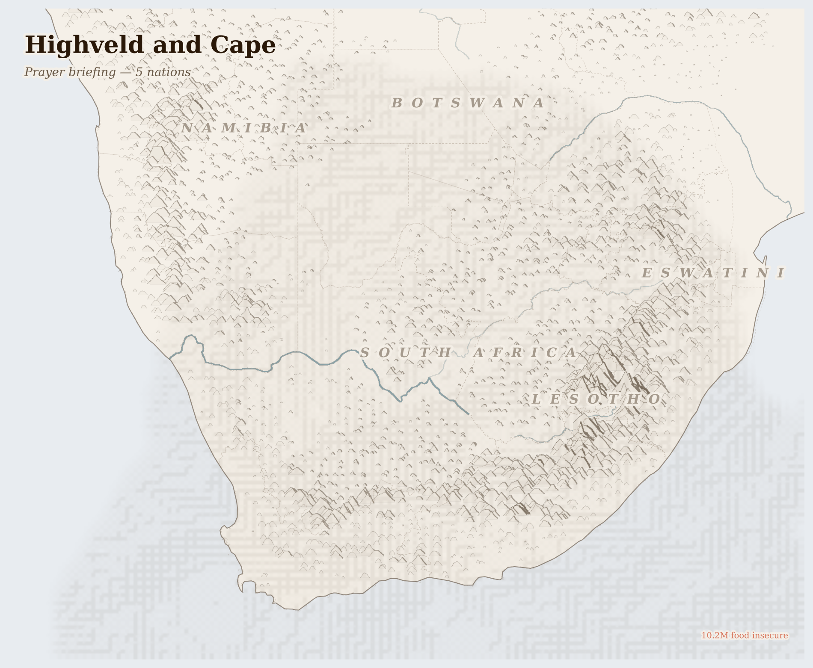

Highveld and Cape
where Archaean craton hosts the ore whose extraction poisons the grassland whose storms water the veld above it
Two kilometres below the surface of the Bushveld plateau, where the rock face reaches 40°C, a Mosotho man from Lesotho drills into the reef that holds 70% of the world's platinum. He has not seen his family in four months. He will send money home on Friday. He lives in a single-sex hostel in Rustenburg where four men share a room the size of a parking space — the same hostel design that apartheid built, repainted but not redesigned.
Lives Lived Here
Before dawn in Maseru, a Mosotho man boards a minibus taxi for the Ficksburg Bridge border crossing. He will travel six hours to reach the Implats shaft at Rustenburg, where he will spend the next four months underground extracting platinum ore that will be refined at Springs, loaded at Durban, and shipped to a Johnson Matthey plant in England to become the catalytic converter that cleans exhaust in a European city he will never visit. His remittance — sent home via Shoprite Money Transfer minus 5% — pays for his daughter's school uniform in Maseru. The uniform is made in China. The platinum is in your car.
In eMalahleni, a woman fills a bucket from a communal tap. The water tastes of iron. She lives three kilometres from the Exxaro coal mine and six kilometres from the Duvha power station. The coal dug here powers the pump that brings her water, and the mining contaminates the aquifer that the pump draws from. She boils the water before her children drink it, which uses paraffin, which costs R35 a bottle, which she earns cleaning houses in the town that exists because of the mine. Her grandson's inhaler costs R180 a month. She does not know the phrase "energy transition," but she knows the power goes off at 6 p.m. on Tuesdays and Thursdays.
In Stellenbosch, on a wine estate that employs seasonal workers from Zimbabwe and the Eastern Cape, a woman picks Chenin Blanc grapes in the February heat for R120 a day — less than the price of the bottle her labour produces. She lives in a compound on the farm's edge. When harvest ends in April, she will move to the citrus farms in Citrusdal, then return to her village near Mthatha for winter, where her mother raises her children. The wine is poured in London restaurants that list the terroir but not the picker.
Before dawn in Maseru, a Mosotho man boards a minibus taxi for the Ficksburg Bridge border crossing. He will travel six hours to reach the Implats shaft at Rustenburg, where he will spend the next four months underground extracting platinum ore that will be refined at Springs, loaded at Durban, and shipped to a Johnson Matthey plant in England to become the catalytic converter that cleans exhaust in a European city he will never visit. His remittance — sent home via Shoprite Money Transfer minus 5% — pays for his daughter's school uniform in Maseru. The uniform is made in China. The platinum is in your car.

Reference map. Country boundaries and features are approximate.
What Presses
The weight on Highveld and Cape
Rustenburg, North West Province — The platinum belt runs through Rustenburg like a vein through a body, and the body is tired. Marikana is fifteen minutes away — the koppie where 34 striking mineworkers were shot by police on 16 August 2012 is still there, unmarked by the state, marked by the community with crosses that lean in the wind. The workers were asking for R12,500 a month. The company, Lonmin (now Sibanye-Stillwater), reported a pre-tax profit that year of $264 million. Today, mineworkers in Rustenburg still live in hostels built for apartheid's migrant labour system — four to a room, shared ablutions, separated from their families in Lesotho and the Eastern Cape for eleven months of the year. Silicosis compensation cases stretch back decades; the payments arrive slowly if they arrive at all. The dust from the tailings settles on the township schools.
Mpumalanga Highveld — Stand on the N4 between eMalahleni and Middelburg and you can see five power stations from one spot. Eskom built them close to the coal seams to save on transport — mine-mouth generation, they call it. The efficiency gain for the utility became a death sentence for the community. Children in Mpumalanga's coal-belt schools have asthma rates two to three times the national average. groundWork and the Centre for Environmental Rights have fought in court for a decade to force Eskom to comply with its own emissions limits; the courts have ruled in their favour; Eskom has not complied. The air quality is worst in winter, when temperature inversions trap the sulphur dioxide and particulate matter close to the ground, and when loadshedding is at its peak because the old stations cannot meet demand. The Just Energy Transition Partnership — $8.5 billion pledged by the EU, UK, US, France, and Germany — promises a managed coal phase-out. The 86,000 coal miners and their families are still waiting to learn what "managed" means for them.
Western Cape Farmlands — The wine lands and fruit orchards of the Western Cape are marketed as South Africa's most beautiful working landscape. The workers who make it work are largely invisible. Seasonal labourers from Zimbabwe, the Eastern Cape, and Lesotho pick grapes for R100-150 a day — less than the retail price of a single bottle of the wine their labour produces. Pesticide exposure, eviction when farms change hands, and the "dop system" (payment in alcohol, now illegal, still practiced) define conditions. During the 2018 Cape Town water crisis — Day Zero, when the city nearly ran dry — agricultural water allocations were cut last and farmworker housing had no storage. The Berg River feeds both the vineyards and the city. When the water runs short, the hierarchy of who drinks first reveals itself.
Four resource streams flow out of the Highveld and Cape — platinum, gold, coal, and labour. The platinum is in catalytic converters from Stuttgart to Seoul. The coal powers stations in India. The gold has mostly run out, but the acid it leaves behind will drain into Gauteng's water for the next three hundred years. The labour — Basotho, Mozambican, Zimbabwean, Eastern Cape — returns home carrying silicosis, broken families, and remittances that keep entire national economies afloat. What does not come back is clean air, clean water, or the years spent underground. 10.2M food insecure (current); platinum group metals (platinum, palladium, rhodium), gold (declining production) and acid mine drainage (legacy), thermal coal leaving.
This Week
Namibia: IFRC DREF allocation of CHF 225,285 for anticipatory heatwave action (reported for Namibia in this dataset, though the allocation targets Viet Nam — data attribution under review).
The hostel in Rustenburg and the catalytic converter in your car are two ends of the same supply chain. The distance between them is not geographical — it is moral. It is maintained by the ordinary act of not asking where the metal came from. The prayer that begins here must begin with that recognition, or it is not prayer but decoration.
For Prayer
For the 10.2 million people across Highveld and Cape who cannot meet their daily food needs. That supply routes hold, that harvests come, that aid reaches those cut off.
Especially for ZAF, facing the most severe convergence of crises in this region. For those making impossible decisions about whether to stay or flee, and for those who cannot choose.
For the helpers in Highveld and Cape — for their safety, their courage, and their capacity to reach those most in need.
For every act of resistance and care in Highveld and Cape — communities sharing food, farmers saving seed, neighbours sheltering neighbours. That these small acts of defiance outlast the crisis.
Out of the depths have I cried to you, O Lord; Lord, hear my voice; let your ears consider well the voice of my supplication.
Most merciful God, who by the death and resurrection of your Son Jesus Christ delivered and saved the world: grant that by faith in him who suffered on the cross we may triumph in the power of his victory; through Jesus Christ your Son our Lord, who is alive and reigns with you, in the unity of the Holy Spirit, one God, now and for ever.
Amen.
Seeds of Hope
At Marikana, the koppie where 34 men were killed has become a site of annual pilgrimage. AMCU — the Association of Mineworkers and Construction Union — organised the 2012 strike and continues to represent rock drillers in platinum wage negotiations that are, each round, an argument about what a human life underground is worth.
For Reflection
What food in your pantry comes from the same global markets?
Whose hunger makes your abundance possible?
Looking Ahead
- The structural forces shaping this region move on timescales longer than any news cycle.
- Eskom's coal fleet will age out over the next fifteen years regardless of policy — the question is whether replacement comes as renewable energy with just transition support for 86,000 miners and 200,000 dependents, or as further deterioration of a grid already incapable of meeting demand.
- South Africa's winter loadshedding June-August -- peak electricity demand coincides with Eskom's weakest fleet performance, threatening mine ventilation and acid mine drainage pump operations
- Just Energy Transition Partnership (JETP) disbursement milestones -- watch whether the $8.5B pledged reaches Mpumalanga coal communities or remains in Eskom's debt restructuring
- Platinum wage negotiations -- AMCU and mining houses enter biennial negotiations that historically produce strike action in the Bushveld belt
Carry This
What to bring with you from this briefing
Take Action
Organizations working at the nodes this briefing traces
South African public interest environmental law organization litigating against Eskom, Sasol, and mining companies for air quality violations, water contamination, and climate accountability. Lead litigators in the Mpumalanga Highveld pollution cases.
Litigates at the core of the mineral-energy complex the briefing describes — Mpumalanga's 12 coal-fired power stations creating the world's worst NO2 hotspot, where children's asthma rates are 2-3x the national average while Eskom's $27B debt makes the Just Energy Transition socially explosive.
Faith-based organization monitoring mining corporations in South Africa, producing community-level assessments of platinum, gold, and coal mining impacts. Documented conditions at Marikana before and after the 2012 massacre.
Monitors the platinum belt the briefing identifies — Rustenburg to Limpopo — where Anglo American Platinum and Implats operate 2km-deep mines at 40°C while Marikana township workers earn poverty wages, connecting corporate extraction to community devastation.
Environmental justice organization campaigning against coal pollution in Mpumalanga, documenting health impacts on fenceline communities, and advocating for a just energy transition that centres coal workers and affected communities.
Works in the Mpumalanga coal corridor the briefing describes — mine-mouth Eskom power stations where 86,000 direct coal mining jobs and 200,000+ indirect are at stake in a Just Energy Transition, while communities breathe the worst air in the world.
Monitors acid mine drainage from Witwatersrand gold mines, documents tailings dam contamination of the Vaal River, and campaigns for rehabilitation of 6 billion tonnes of toxic mine waste threatening Gauteng's water supply.
Investigates the acid mine drainage the briefing identifies as 130 years of gold mining legacy — toxic tailings contaminating the Vaal River water supply for 16M Gauteng residents with uranium, arsenic, and heavy metals, where remediation costs exceed mining profits ever extracted.
Community organizations supporting Marikana massacre survivors, widows, and platinum mineworkers demanding justice, compensation, and structural change in mining-belt working conditions. The annual Marikana commemoration keeps the 34 killed workers in public memory.
Centres the cost-bearers of the platinum economy the briefing documents — the 34 strikers killed at Marikana in 2012, the widows still awaiting compensation, and the migrant workers from Lesotho and Mozambique whose silicotic bodies are returned to countries South Africa's extractive economy keeps underdeveloped.
Joint campaign by CER, groundWork, and Earthlife Africa advocating for coal phase-out, renewable energy transition, and accountability for Eskom's pollution. Challenges new coal plant permits and demands compliance with air quality standards.
Addresses the Just Energy Transition dilemma the briefing frames — Eskom's operational crisis (300+ days of loadshedding in 2023) colliding with climate demands for coal phase-out in a country with 34% unemployment, where transition threatens to add joblessness to the toxic mix.
Generated 2026-03-18